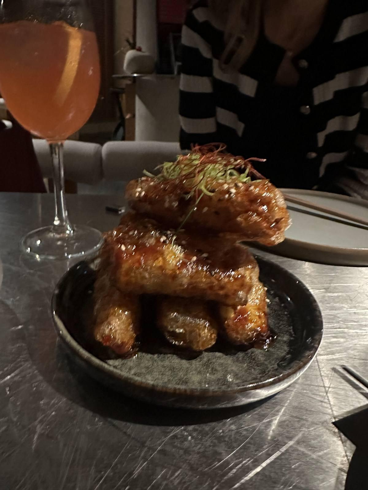
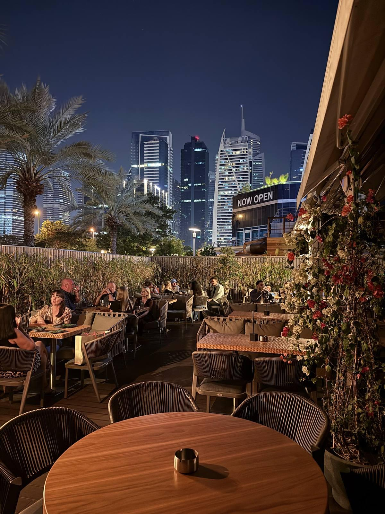
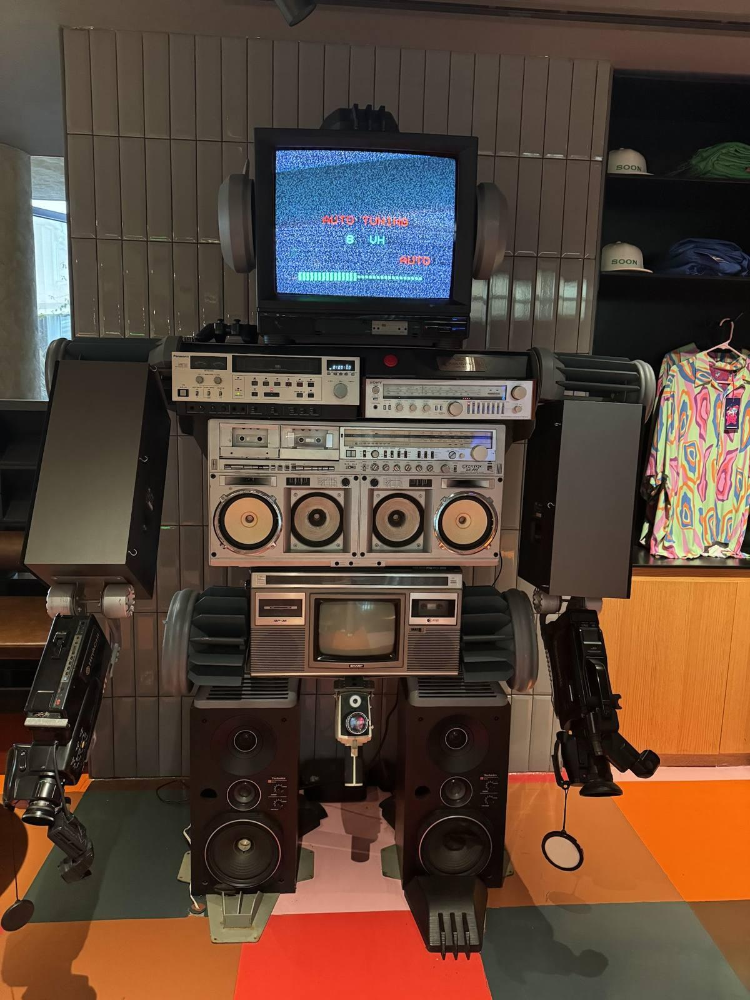
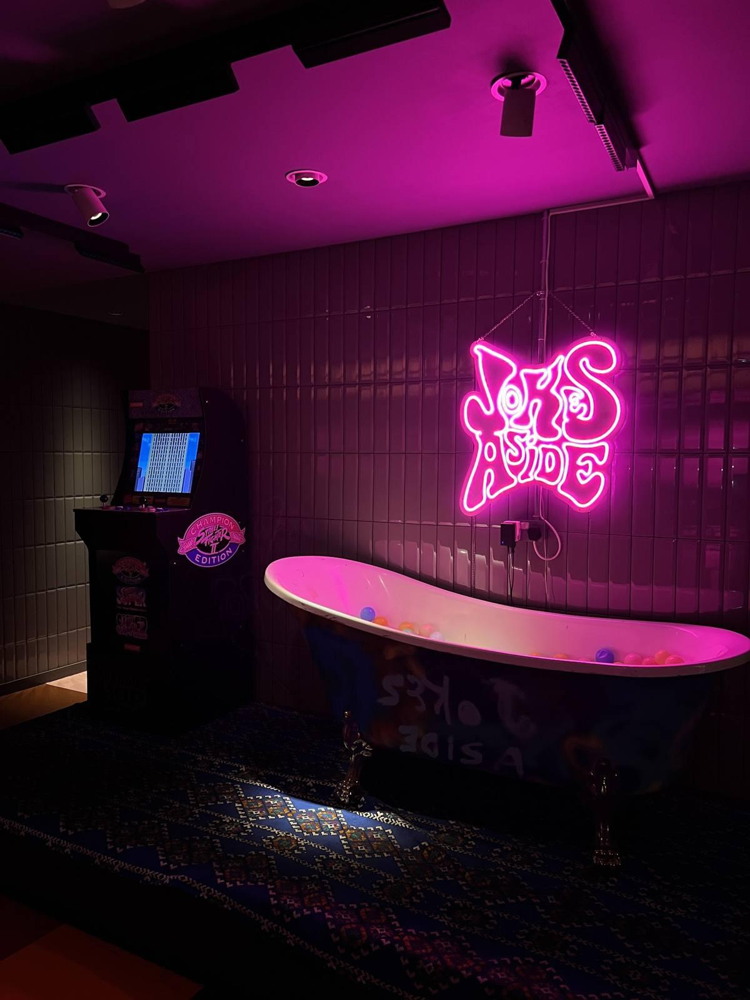
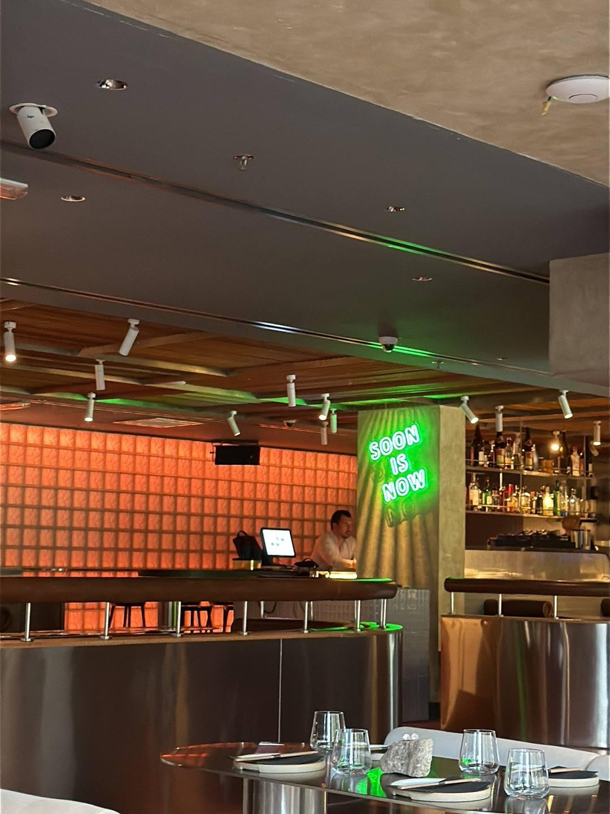
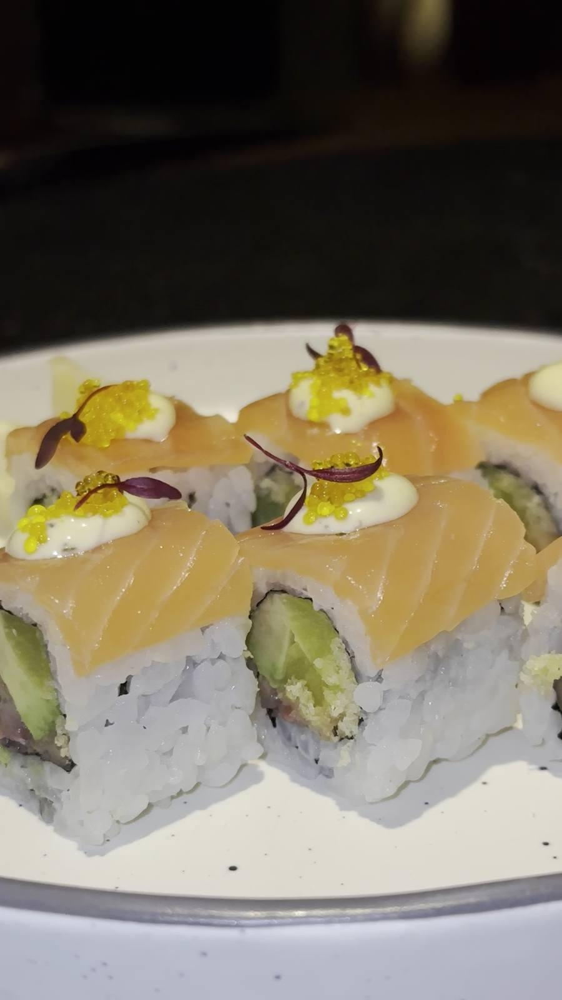
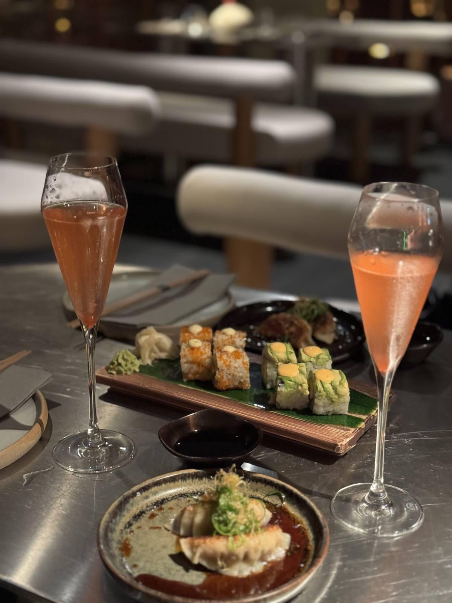
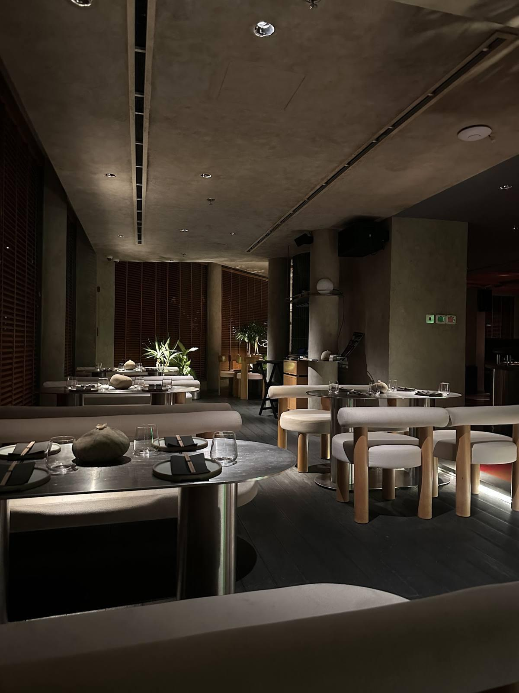

Wagyu katsu sando
The dish regulars tell you to try first.
"Food was amazing, especially the wagyu katsu sando. You should definitely try it!"Ulka B.
Armada Tower 2 · Cluster P · JLT
A Tokyo-raised izakaya with wagyu katsu sando, prawn gyoza, lobster maki and sushi, signature cocktails, DJs on weekends and a terrace facing the towers. Open daily from 3 PM to 1 AM.
4.71186 Google reviews1,186 reviews
Right now
Checking…
From Google Maps popular times
Get a table
Typical busyness by hour, from Google Maps.
Now Quiet Busy






Photos from the SOON Izakaya Google Maps listing
"Absolutely loved my experience at Soon DXB! The ambiance is trendy yet cozy, making it perfect for both casual hangouts and special nights out. The food was beyond delicious every dish was packed with flavor and beautifully presented. The staff were super friendly and attentive, which really added to the overall experience. Highly recommend trying their signature dishes and creative drinks. Can’t wait to go back!"
"A very nice experience. Cool environment, I appreciated so much the fusion between modern and traditional, the old Videogames 😊 and the playlist which make me feel so nostalgic. Food & Beverage offer was quite impressive, both warm and cold options: delicious ghioza and tempura prawns🍤, sushi 🍣 and sashimi as well. Warm and very attentive service, thanks so much for the complementary dessert. Very recommended."
"I had a lovely experience. Design is modern and cozy loft I’m in love. The mocktails were tasty, I tried with grapefruit. The kushiyaki were absolutely delicious - especially the seafood options! Im in love with prawns. Perfectly grilled and full of flavor. Soon is a great spot if you’re looking for quality Japanese bites in a stylish setting. Design is modern and cozy loft I’m in love."
"Had a great experience at Soon in JLT! Darwin made the sushi and it was absolutely delicious — fresh, beautifully prepared, and full of flavor. You can really tell care went into every bite. June was serving the drinks and did an awesome job too — friendly, attentive, and made sure everything was perfect at the table. Such a lovely team and a place I’d happily come back to!"
Reserve
Tap a question and WhatsApp opens with it ready to send.
Find us
SOON Izakaya, Armada Avenue Hotel
Armada Tower 2, Cluster P, Jumeirah Lakes Towers, Dubai
Enter through the Armada Avenue Hotel
| Monday | 3 PM – 1 AM |
|---|---|
| Tuesday | 3 PM – 1 AM |
| Wednesday | 3 PM – 1 AM |
| Thursday | 3 PM – 1 AM |
| Friday | 3 PM – 1 AM |
| Saturday | 3 PM – 1 AM |
| Sunday | 3 PM – 1 AM |
+971 55 434 0575 (call or WhatsApp)